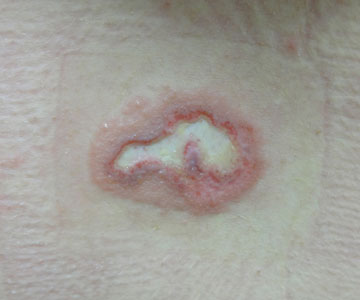
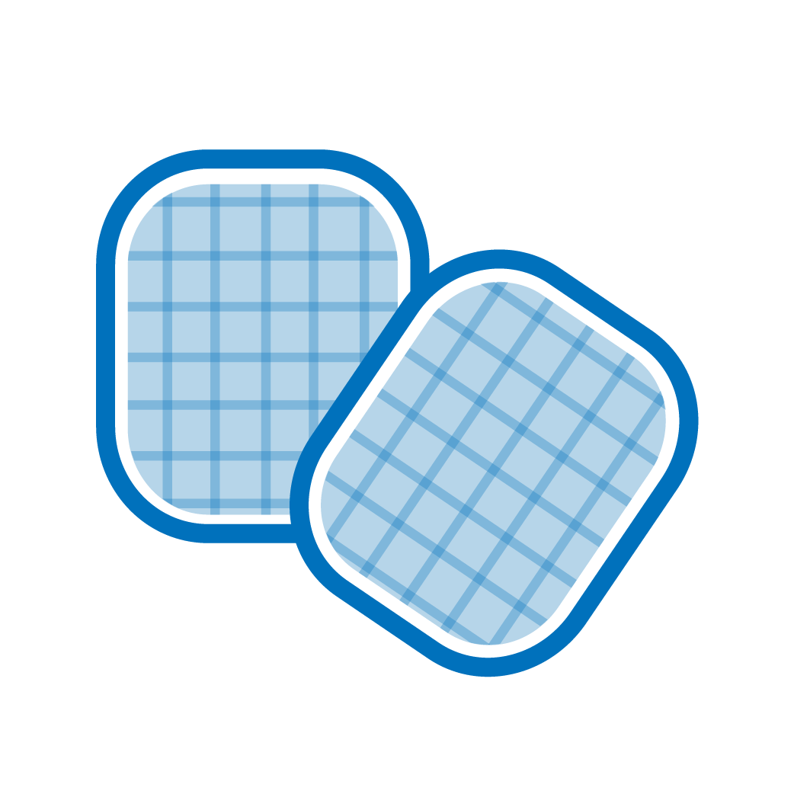
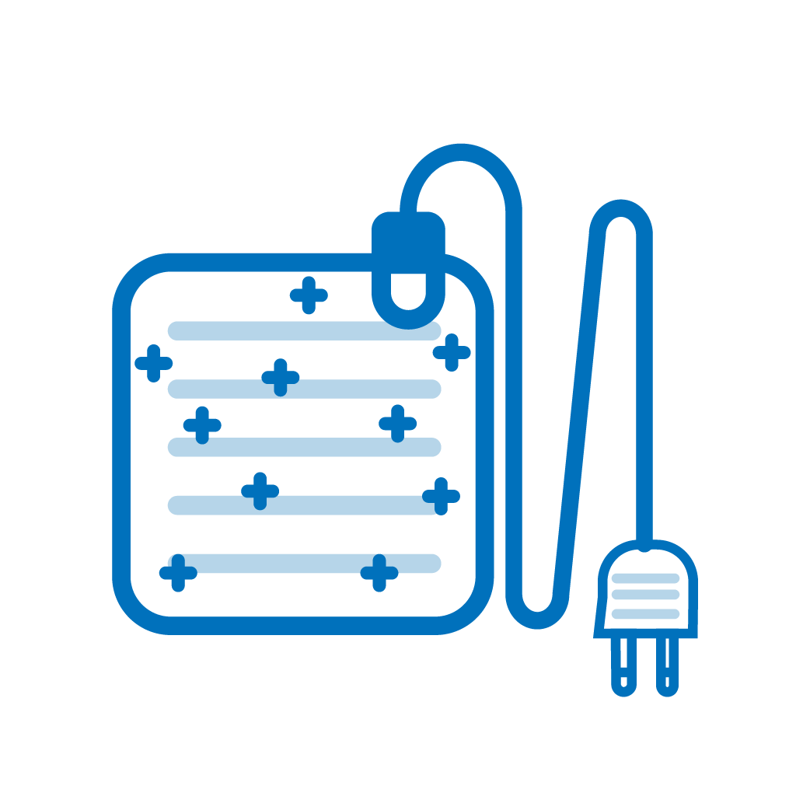
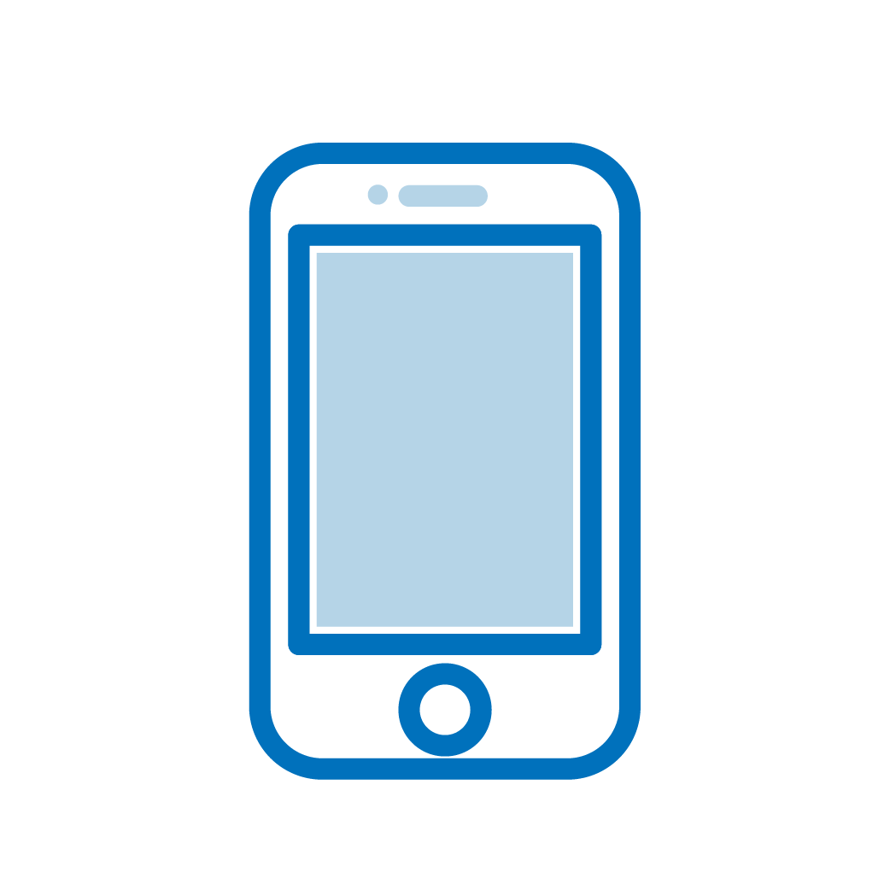

· 원인



· 특징
① 전기장판, 온열찜질, 뜸 등이 고전적인 원인이며, 근래에는 핫팩이나 스마트폰의 배터리 등에 의한 발생도 증가하고 있어 주의를 요합니다.
② 일반접촉화상에서보다 깊은 화상을 유발하는 경우가 많습니다. 3도 화상도 매우 흔히 발생합니다. 일반접촉화상의 경우처럼 초기에 화상을 인지하지 못하고 상처가 악화된 후 내원하는 경우가 많습니다. (깊은 화상일수록 통증이 적은 특징이 있어 접촉화상/저온화상은 초기에 통증이 심하지 않은 경우가 흔합니다.)
③ 당뇨, 고령, 음주 후 등 감각이 둔해질 수 있는 취약층은 족욕이나 찜질 등을 할 때 특히 주의해야 합니다.
④ 발열 물체에 피부의 한 면을 장시간 접촉시키지 않도록 주의하고, 휴대용 핫팩은 직접 몸에 접촉하는 것을 피하고, 손수건으로 한번 감싼 뒤 사용하는 것이 좋습니다.